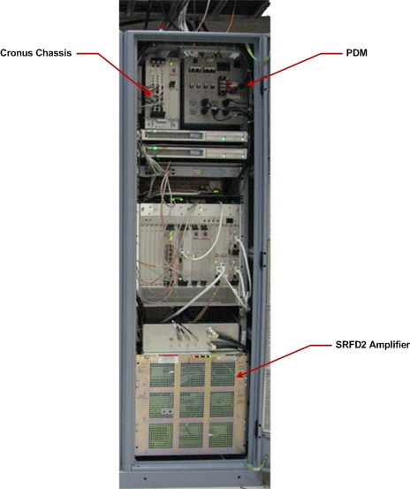
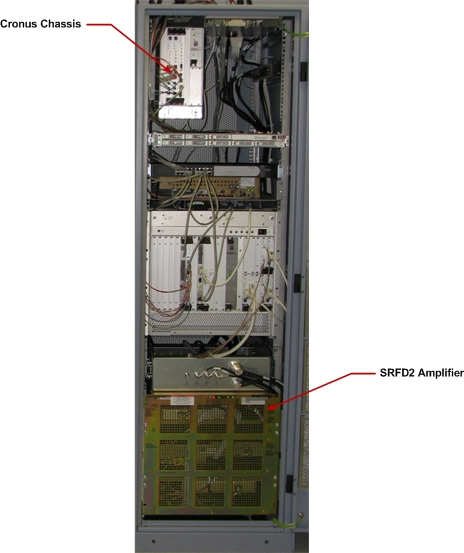
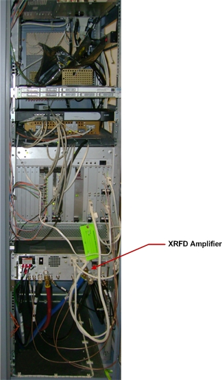

- 00000018WIA3040C030GYZ
- id_123732931.16
- Oct 15, 2024 3:14:05 AM
1.5T RF Amplifier Replacement
Prerequisites
| Required persons | Preliminary requirements | Procedure | Finalization |
|---|---|---|---|
| 1 | Not Applicable | 70 minutes | 120 minutes |
| Item | Quantity | Effectivity | Part number | Manufacturer |
|---|---|---|---|---|
| Safety Glasses | As needed | - | - | - |
| Work Gloves | As needed | - | - | - |
| MR Equipment Room Hoist Kit | 1 | - |
5196226 | - |
| Non-Magnetic Tool Kit | 1 | - |
5113258 | - |
| Item | Quantity | Effectivity | Part number | Manufacturer |
|---|---|---|---|---|
| Cable ties | As needed | - | - | - |
| Item | Quantity | Effectivity | Part number | Manufacturer |
|---|---|---|---|---|
| 1.5T RF Amplifier | 1 | systems with SRFD2 RF Amplifier P/N 2230683 |
2351573 | - |
| 1.5T XRFD RF Amplifier | 1 | systems with XRFD RF Amplifier P/N 5317905-16 |
5317905-17 | - |
| XRFD RF Amplifier | 1 | - |
5317905-16 | - |
| Hoist Bracket | 2 | - |
5262278 | - |
| Shipping Container | 1 | - |
543551 | - |
| ||||||||||||
| Condition | Reference | Effectivity |
|---|---|---|
|
The PGR PDU/gradient subsystem must be locked out and tagged out (LOTO) before starting this procedure. | - | - |
About this task
Overview
There are three versions of the PGR cabinet. The table below shows which procedure to use to replace the RF amplifier.
| For PGR Cabinet Containing: | See Illustration: | Use Procedure In: |
| Power Distribution Module (PDM), Cronus Chassis, and SRFD2 RF amplifier (P/N 2230683) | 1.5T PGR Cabinet with PDM, Cronus Chassis, and SRFD2 Amplifier | Systems with PDM, Cronus Chassis, and SRFD2 Amplifier |
| No PDM, but has Cronus Chassis and SRFD2 RF amplifier (P/N 2230683) | 1.5T PGR Cabinet with Cronus Chassis and SRFD2 Amplifier | Systems with Cronus Chassis and SRFD2 Amplifier (No PDM) |
| No PDM or Cronus Chassis, but has XRFD RF amplifier (P/N 5317905-16) | 1.5T PGR Cabinet with XRFD Amplifier | Systems with XRFD RF Amplifier |



Systems with PDM, Cronus Chassis, and SRFD2 Amplifier
Removing SRFD2 Amplifier
Procedure
- Remove eight screws securing the service bracket to the slide rails.
Figure 8. Slide Rail Screw Locations  Note
NoteOne screw on each side is accessible through a hole in the slide rail. If necessary, you can remove the right side cabinet door for better access to the screw on that side.
Installing New SRFD2 Amplifier
Procedure
Systems with Cronus Chassis and SRFD2 Amplifier (No PDM)
Removing SRFD2 Amplifier
Procedure
- Remove eight screws securing the service bracket to the slide rails.
Figure 15. Slide Rail Screw Locations NoteOne screw on each side is accessible through a hole in the slide rail. If necessary, you can remove the right side cabinet door for better access to the screw on that side.
Installing New SRFD2 Amplifier
Procedure
- Move the new RF amplifier near the cabinet and attach the service bracket to the new RF amplifier using eight screws. See Service Bracket Screw Locations.
- Connect the power cable from the new RF amplifier to the cabinet terminal strip.
- Connect the lifting hooks to the service bracket. See Lifting Hooks Connected to Service Bracket.
- Using the hoist, lift the replacement RF amplifier up to the level where the holes for the rail mounting screws align with the holes on the slide rails.
- Connect cables J3, J4, J5, J6, J7, J8, J10, J13, J14 and J18 to the rear of the RF amplifier. See Cable Locations on RF Amplifier (Rear View).
- Secure the RF amplifier to the slide rails with eight screws. See Slide Rail Screw Locations.
- Remove the lifting hooks from the service bracket.
- Remove and stow the hoist service kit. See Hoist Service Kit and Lifting Accessories.
- Slide the RF amplifier into the cabinet, and secure it to the cabinet mounting rails with eight screws and washers. See RF Amplifier Screw Locations.
- Connect cables J2, J3, J13, J21, and J22 to the front of the service bracket. See RF Amplifier Service Bracket.
- Secure the cables that were tied with cable ties.
- Go to the Step Finalization section.
Systems with XRFD RF Amplifier
Removing XRFD Amplifier
Procedure
- Before disconnecting any coolant lines on the front of the RF amplifier, shut down the Power Electronics Pump (PE) at the HEC by pressing ▲ and F3 simultaneously. Then switch the PE circuit breaker to OFF.
Figure 20. Power Electronics Pump OFF 
Slide the XRFD amplifier out of the PGR cabinet.CAUTION 
- Using the hoist, lower the XRFD amplifier onto the crate top.
Figure 24. Lowering Amplifier onto FRU Crate Top 
Installing Replacement XRFD Amplifier
Procedure
Move the new XRFD amplifier near the cabinet and attach the hoist brackets to the new RF amplifier using three screws per bracket. See Hoist Bracket Screw Locations.Notice - Connect the lifting hooks to the hoist brackets.
- Using the hoist, lift the replacement XRFD amplifier up to the level where the holes for the rail mounting screws align with the holes on the slide rails.
- Secure the XRFD amplifier to the slide rails with six screws. See Screw Locations for Slide Rails.
- Remove the lifting hooks from the hoist brackets.
- Remove the hoist brackets from the XRFD amplifier by removing six screws. See Hoist Bracket Screw Locations.
- Remove and stow the hoist service kit. See Hoist Service Kit and Lifting Accessories.
- Slide the XRFD amplifier into the cabinet, and secure it to the cabinet mounting rails. See Screw Locations for Securing RF Amplifier to Cabinet Rails.
- Connect the cables and coolant hoses to front of the new XRFD amplifier.
- Turn on the PPMP CB at the HEC. Start the pump by pressing ▲ and F3 simultaneously.
Finalization
Procedure
- Remove LOTO from the PGR PDU/gradient subsystem. See the MR Service Safety Manual, PN 5452735.
- Power up the host PC.
- Calibrate the RF amplifier.
- Perform UPM Calibration and UPM Functional Check – Body Mode.
- Perform UPM Calibration and UPM Functional Check – Head Mode
- Perform a SaveInfo.